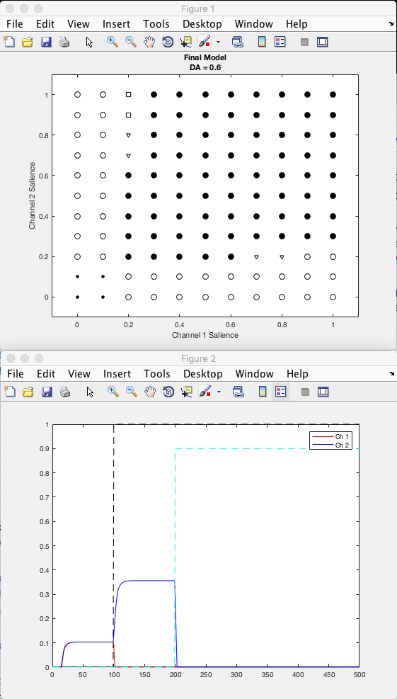

Model of action selection in the basal ganglia
Shreyas M. Suryanarayana, Jeanette Hellgren Kotaleski, Sten Grillner, Kevin N. Gurney Neural Networks,Volume 109,2019,Pages 113-136,ISSN 0893-6080, https://doi.org/10.1016/j.neunet.2018.10.003 Matlab Code Description The main code is presented for the Final model. All the other models can be simulated by adjusting the relevant synaptic weights and setting the weights of pathways not simulated or `lesioned' to zero. Main Programs (type NormalMain on matlab prompt to run) The main program increases the channel saliences by increments of 0.1. Two channels are incremented. The increments of two channels from 0 to 1 yield 121 salience combinations.They are checked for each value of dopamine which itself is incremented in steps of 0.1 and checked from 0 to 0.8. We limit to DA = 0.8, since the dopamine ratio for 0.9 is very high. The program checks each of the 121 salience combination outputs through the conditions of selectivity and plots them accordingly. It also matches the combination outputs to ideal Hard and Soft selection regimes and prints the total hard selections H and total soft selections S along with Hard selection match Ph and Soft selection match Ps for each value of dopamine and its corresponding dopamine ratio Rw. It plots Ph and Ps across Rw, and finally prints Max Ph and Max Ps value. Examples: Running FinalNormal produces graphs while it runs similar to those in the paper's figure 2B and figures A, B such as:  In a few minutes it completes running, and shows a plot similar to that in figure 3 C: Functions There are five functions used in the model. Brief descriptions on their use is given below.Ramp Output ( ) This is the output function for the modelled artificial neuron. Hardness ( ) This function compares each salience combination output with the ideal hardness selection template and returns 1 for every match, which is summed up for a particular value of dopamine for the 121 combinations in the main program. Softness ( ) This function repeats the same function as Hardness, but the comparison is for the ideal softness selection template. Parameters ( ) This function fits cubic splines to Ph and Ps data points and plots them across Rw. It also prints Max Ph and Max Ps which are the maximum values of the spline ts rather than the data points themselves. Slowplot ( ) This function plots the output of the two channels for each salience combination. This can be used to graphically view the change in output with changing salience and its behaviour, especially reversal phenomenon. Note The function parameter works for DA = 0 to 0.8. To simulate higher DA values, have to change spline t limits in the function. The selection regime plot and slowplot occur simultaneously in two windows, pause() can be added if it too fast. The Slowplot function has some additional plotting options which are commented.They can be used if needed.